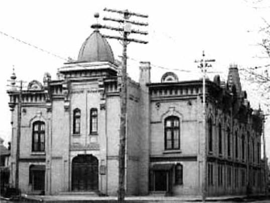

-1-MasterItem.svg)
Stories of Westminster United Church & its People / Page
148
The Beginnings
The first year and several months of Westminster congregation’s services were conducted
at Victoria Hall on Notre Dame. Two hundred people attended the 1st service that
New years Day,
January 1, 1893. There was music but very basic; probably a pump reed instrument
(sometimes called
a harmonium). There was no choir but we did have a cornet player and a lusty
voice to move the
hymns along. Miss Marie Winstanley Pridham, soprano, and Edith Miller, alto,
were duly engaged
followed later by Crosby Hopps, tenor, and Frank Maslin, baritone — our first quartet (what we today,
would refer to as four soloists.) Miss Janet Stead was accompanist.
When the opening ceremonies of our own first building were held
5 August 1894, we were still without choir. The choir from Grace
Methodist church, a few blocks east of us on Ellice Avenue at Notre Dame
(pictured) graciously donated their services for the occasion. But we did
have an organ: a cast-off from Grace Church, it was a Warren reed organ
which one listener described as follows: “The organ at Grace Methodist
Church Grace Church has arrived at that state of perfection when it is
difficult to tell it from a circus calliope.” We suffered it for five years.
YouTube: Lee Conklin Reed Organ Museum- Clough and Warren Reed organ, from the
1890s.
(Lovers of Sullivan’s
The Lost Chord
listen up.)
Things improved in 1899 when we discarded Grace’s cast-off and bought our own brand new D.W.
Karn organ — 2 manuals (keyboards) and 24 stops. For those who are interested, Karn was a
very
reputable Canadian firm working out of Waterloo Ontario. They went bankrupt in
1916.
YouTube: a Karn Reed organ also from the 1890s.
Over those first years we also had a series of organists; Harry Lunt, Mary
Robertson, Grace Mitchell
(1905 to 1911) and a Mrs. Munshaw. Also a couple of Choir directors: Capt. C.N.
Mitchell, until 1906,
and Fred Warrington, until 1910.
Table
of Contents

Music at Westminster